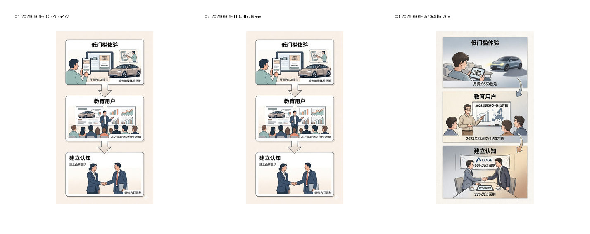
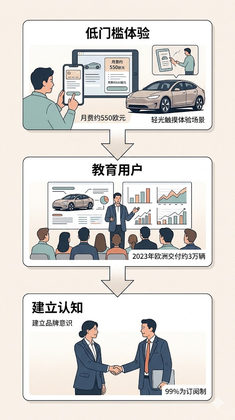

G20 · 完整显式规则回归：低门槛体验→教育用户→建立认知
回归三阶段小场景 + 数字的显式规则和第二层美观效果。
Evidence: references/text2pic/conversations/20260506-图片风格总结分析/IMAGE_MANIFEST.md § G20 完整显式规则回归：低门槛体验→教育用户→建立认知

Images

2d764a752211f79a…

2d764a752211f79a…
2b2ab76680760379…